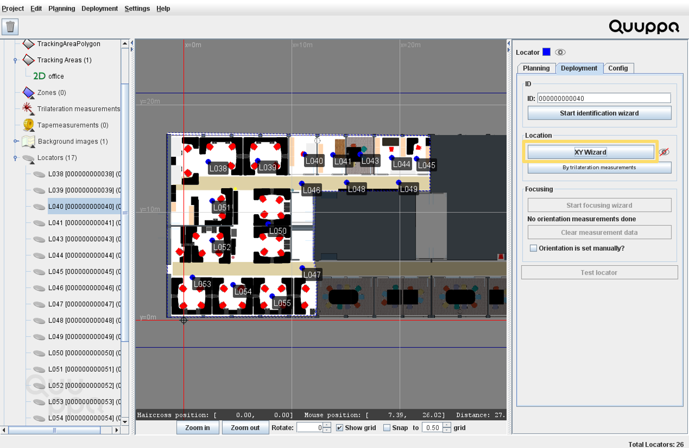

Position Locators Using XY Wizard
The QSP offers multiple tools for positioning the Locators. This section will cover how to position the Locators using the XY Wizard tool. The XY Wizard is a handy tool that guides you through the whole process of positioning the Locators.
- Open the project in the QSP.
- Select the Locator that you want to position (using either the map view or the object tree).
-
In the panel on the right, open the Deployment tab and
click the XY Wizard button.

-
This will open the XY Wizard window. Follow the steps and instructions given by
the Wizard and you will get accurate coordinates for the selected Locator.
Tip: Please use appropriate measurement tools to get accurate measurements for your project. We recommend a laser measurement tool for the measurements. A laser alignment tool and a tripod to keep the tools steady are also useful.
- Repeat the process for all of the Locators.